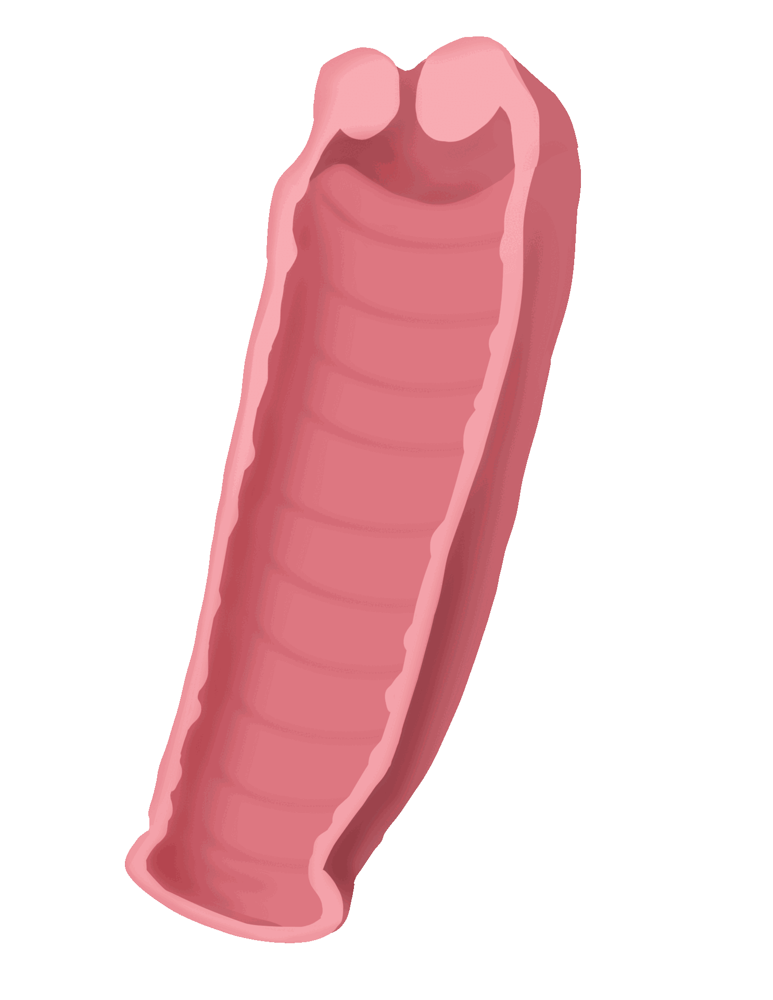
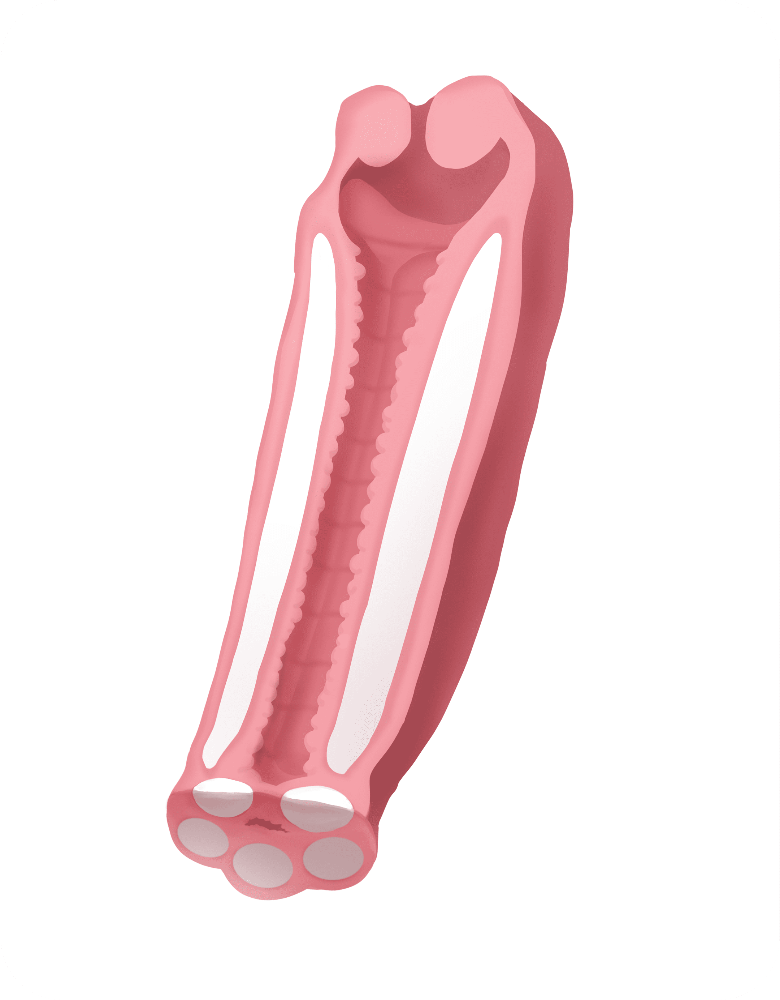
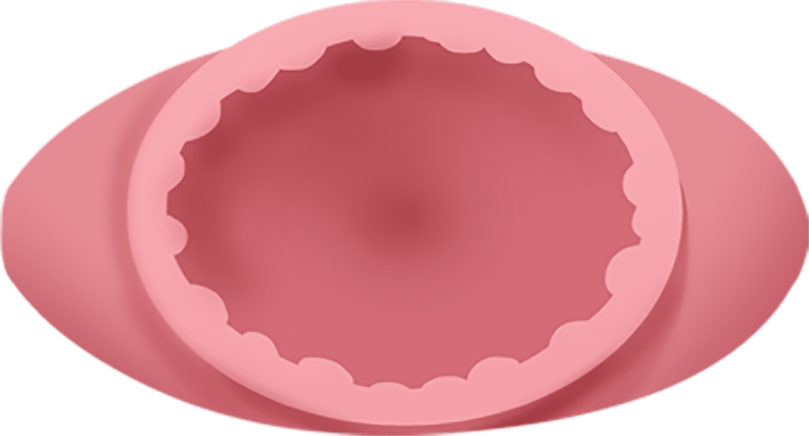
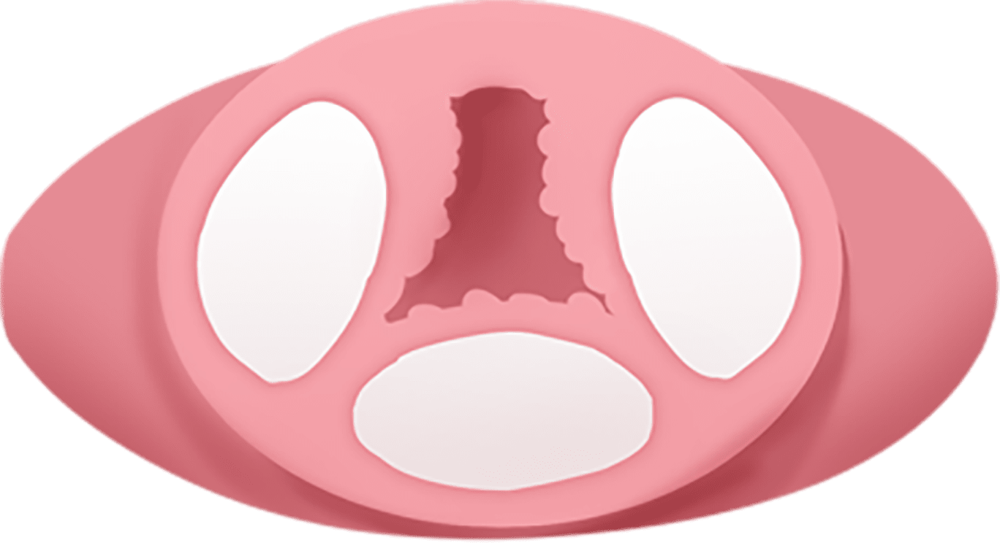

나를 위한
IN & OUT 모델링 질 필러
나를위한 산부인과의
“IN & OUT 모델링 질 필러”
는
의료진의 노하우와 기술력으로
수술 없이 간단한 주사시술로
탄력과 수축력을 증가시킬 수 있습니다
- 수술시간 20분 내외
- 회복기간 2주
- 입원여부 없음
탄력과 수축력을 증가시켜주는
IN & OUT 모델링 질 필러

질 내부 깊은 곳부터 시작되는 IN 포인트 3부위에 부위당
5cc 이상의 대용량 필러를 주입하여, 질 용적을 획기적으로
줄여주고 질 입구 쪽 OUT 포인트 5부위에 부위당 1~2cc의 필러를
주입하여 총 20cc이상의 필러로 든든하게 조여주고 받쳐줍니다.
IN & OUT 모델링 질 필러
시술방법
-
Before
시술 전 질 내부
-
After
시술 후 채워진 질 내부

-
시술 전 질 단면도

-
시술 후 채워진 질 단면도

나를위한에서는 과학적인 질압 측정을 통해 환자분에게
가장 이상적인
볼륨감을 디자인하고,
최적의 필러 용량을 제안 드리고 있습니다.
나를위한이 사용하는 필러는
안전성
을 인증받은
전용 콜라겐 필러와 HA 필러이며
정품/정량 사용의 원칙
을 준수하고 있습니다.
비절개 시술로 통증을 최소화하고, 바로 일상생활이 가능한
간단한 시술이지만,
확실한 질 축소 효과
를 보실 수 있습니다
IN & OUT 모델링 질 필러
대상자
-
수술이 무서운 경우
-
휴가를 내기 어려운 직장 여성의 경우
-
질은 늘어나지 않았는데 성감이 없는 경우
-
임신 또는 출산 후 수축력이 감소한 경우
-
질에서 바람 빠지는 소리가 나는 경우
-
성감을 높이고 싶은 경우
IN & OUT 모델링 질 필러
효과
-
회음부의
탄력 증가 -
질강 수축도
증가 -
콜라겐 생성을 도와
질벽 조직이
두꺼워지는 효과 - 성교통 감소
- 성감 증가
- 요실금 개선
- 재발성 질염 개선
질 이완 진단기
를 통한
질압측정

나를위한 산부인과에서는 비비브 질타이트닝,
질 축소술,
질 필러 시술 등에 질압측정을 통한
비교 데이터를 제공해 드리고 있습니다.

프라이빗한 휴식 과 회복
나를위한산부인과에서는 치료를 받는
환자분들이
긴장을 완화하고 편안한
마음으로 쉬실 수 있도록
고급스럽고
편안한 분위기의 1인 회복실을 제공합니다.
IN & OUT 모델링 질 필러
시술 후 주의사항
시술 후 주의 사항은 개인 차가 있을 수 있습니다.
-
01
시술 당일에도 샤워는 가능합니다.
-
02
시술 직후 출혈 방지와 출혈량 체크를 위해 질 내부에 거즈를
넣어 두는 경우에는, 귀가 후 2시간 후에 자가 제거하시기 바랍니다. -
03
시술 시 사용하는 봉합사는 성형 전문 실로 자연 흡수되는 소재지만,
시술 후 7~10일이 지나도 녹지 않을 경우
의료진의 지시에 따라
제거합니다. -
04
시술 후 필러의 안정적인 안착을 위해 7~10일간 성관계는 피해주세요.
-
05
시술 후 7일까지는 출혈이 동반될 수 있으므로, 생리대 또는 라이너를
착용해 주세요. -
06
시술 후 항문과 질 주변에 묵직한 느낌이 들거나, 밑이 빠질 듯한
통증이 1~2일 정도 지속될 수 있습니다.
시술 후 생길 수 있는
자연스러운 증상이오니 걱정하지 마세요. -
07
시술 후 1주일간 탐폰, 음주, 탕 목욕, 자전거 운동과 같이 시술 부위를
자극할 수 있는 행위는 피해주시고
흡연과 음주는 안정적인 필러 안착을 위해
삼가해주세요. -
08
시술 후 생리대를 다 적실 듯한 과도한 출혈이 있을 경우 병원으로
연락 주세요.